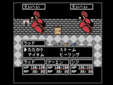
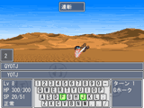
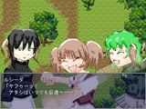

シルバーセカンド開発日誌
■
2008-12-29 (月) 窓の杜大賞 銀賞受賞▼多くの10周年記念コメントをお寄せくださって、
皆さま誠にありがとうございます。
いただいた言葉を糧に、これからも頑張り続けたいと思います！
それはそうと。
WOLF RPGエディターが「2008年度 窓の杜大賞」で銀賞を頂きました！
運が良くても編集部賞もらえる可能性が
最もベストだろうと思ってましたから目玉がぶっ飛びました。
ラッキー使いすぎたので反動で来年の運勢が不安です！！
これも多くのバグ報告やアドバイスを
送ってくださった皆さまのおかげです！
本当にありがとうございます！
【2008年度 窓の杜大賞】
http://www.forest.impress.co.jp/prize/2008/result.html [ｱｰｶｲﾌﾞ]
銀賞 「WOLF RPGエディター」
評価は…え？「楽しく簡単に作れる」……？
「とっつきやす…い」……！？ これ送ったの誰！？
こりゃツクールと比べた場合の評価ではないでしょうね。
HSPなどのスクリプト系ツールで
挫折した人が感想を送って下さった、という印象です。
そんな「市販ソフトに手を出せなかった人」が
触ってくださっているらしいので、
そういう意味では公開して良かったなと思います。
投票してくださった方々が
ここを見てくださっているかどうか分かりませんが、
みなさま本当にありがとうございました！
もっと綺麗な素材が欲しいとか、もっとお手軽に作りたいという方は、
ツクールシリーズをお買い求めになるのがオススメです。
私はツール開発が専業じゃないので、
初心者向けのドキュメント整理だとか
分かりやすいチュートリアルなんて書くヒマがないんですよ。
ツクールは本当に初心者向けなので、
「ＲＰＧ作るの面白そう、でもウディタむずいよ！」
とお思いでしたら、是非ツクールをどうぞ！
技術が向上したならば、最終的に作れるモノ的には
そんなに変わらないと思います。
むしろRPGツクールのほうがスクリプトでやれる幅が広いので、
ツクールの方がポテンシャル的には強い気がしますよ！
以下はその他の受賞ソフトについて。 ▼追記を開く▼ちなみに、窓の杜大賞に挙がっている他のツールも
かなり便利なのでオススメです！
といっても、どれもこれも用途がマニアックすぎますよ！？
PC初心者さんはHDDの状態を知りたいなんて思わないでしょうし、
「デフラグ？何それ」だし、
パーティション切り分けもたぶんしませんし、
テキストエディタもメールしか書かない人には必要ないし
大量の動画ファイルを保存するなんて
普通の人はしないはずなんですよ！
もちろんゲームを作ろうなんて思う人もいません！
そう思うと濃すぎる大会。
いいなと思ったのは、大賞の「CrystalDiskInfo」でして、
もうシェアウェアレベルのHDD状態チェックソフトが
必要なくなるほどのシロモノ！
前にハードディスクが壊れたので
HDDLife（シェアウェア）を導入してみたものの、
もう試用期限が切れちゃったので、これは凄くありがたい一品でした。
また、「mEditor」はワードパットやメモ帳の
完全上位互換として使えますから速攻で導入しましたし、
「フォルダの足あと」もウディタやらペイントやら
複数ソフトで「データ保存時のフォルダが遠いよぉぉぉ！！」
と思っていた身からすると鼻血が出るほど便利でした。
かつては有料でしか存在しえなかったソフトが無料のものとして
配信されるようになる傾向は、
どんどん強くなっているのかもしれません。
プログラムは、昔に比べるとますます敷居が下がってきています。
コンパイラ（プログラムコードを実行できる形式に変換するソフト）も
無料だしそれに負けじとVisualStudioすら
無料版を配布するような時代です！
そしてライブラリ（プログラムに使えるパーツみたいなもの）も、
理解しやすく、使いやすい造りへと日々進歩しています。
発想とやる気と学習する意欲さえあれば、お金なんて無くとも
PCの世界では何でもできてしまう時代が来ようとしています。
ソフトウェア企業は、一般人に
とてもマネできないような商品を作らなければ、
見向きもされない時代が来てしまうのかもしれません。
まあ、実際PCショップのソフトコーナー行くと、
フリーウェアに詳しい人からしたら
絶対買わない商品が溢れているんですけれど！
データをMP3に変換するソフトなんていちいち買わないよ！
そして天才プログラム少年少女が生まれる土壌も育っているわけで、
これから楽しい世の中が始まろうとしている気がします。
日本人は何かにハマると死ぬほど頑張る人種だと思うので、
これからの未来も凄く楽しみです！
それでは、みなさんよいお年を！仮免許のためにヒイヒイ言ってたシーズンがようやく終わりを迎えました。
ということで、おかげさまで本日、
仮免許試験に合格することができました。
ウィンカー1回忘れた程度でも普通に実技通るんですね。
いくら緊張したとはいえ路上では忘れないように
気を付けないとヤバいですよコレは。
っていうか、MT（マニュアル）車の実技合格率が50％だったのに対し、
AT（オートマ）車の実技合格率が80％だったのを見ると、
MT車に乗らなくて良かったと思いました。私はAT車限定です。
移動手段として考えるなら、操作がより少ない方が嬉しいと思います。
え、開発はどうなってるのかって！？
いや試験の方が忙しくて全然進んでませんした！
でも自動車学校はとりあえず一区切り付いたので、
そろそろ開発の方にも余裕を回せるようになると思います。
【余談】 ウディタの新機能
次回バージョンのWOLF RPGエディターにて、
「commonファイルを読み込んでそのまま実行できる」
機能を追加する予定です。
コモンイベントファイルだけ入れておけば使えるので、
これまでよりもっと気軽にコモンイベント素材が
使えるようになると思います。
ついでに、合作するとき無闇に
ベース部分に手を加えたくない場合にも便利。
あと、
「コモンイベント名でコモンイベントを呼び出す機能」
も追加予定です。何を言ってるのか分からないかもしれませんが、
これまで番号指定で呼び出していたコモンイベントを、
プログラムのように名前で呼び出すことも可能になる、ってことです。
たとえばコモンイベント1番に
「アイテム増加」という名のコモンイベントがあったとき、
これまでは「1番のコモンイベントを呼び出す」という処理しか
できなかったのに対し、
「名前『アイテム増加』のコモンイベントを呼び出す」
という処理にすることで、名前を変えない限りは
このコモンイベント『アイテム増加』の場所を1番から15番に
入れ替えたりしてもそのまま正常にゲームが動作するのです！
まあ、要は場所を選ばなくなるってだけなので
ゲーム的には何も意味ないんですが、
作る側からすると何も考えずにポコポコと
コモンイベントを増やせるので、だいぶ気楽になると思います！
正直、どこにどのくらいコモンイベント入れるか、
と迷って時間使うのも多いですからね。
問題は、コモンイベントの名前を変えると動作しなくなることですが！
処理速度的には、名前呼び出しでも「番号呼び出し＋変数操作0.5回分」
くらいの時間しかかからなさそうなので、変数操作一個増やしただけで
致命的になるような状況でもなければ、
基本的に名前指定の方を使った方が
管理が楽になるんじゃないかなと思います。
10000万回あたりの処理時間、番号呼出 54ms vs 名前呼出 69ms
（※比較：変数操作10000回 = 約30ms）
ただ、まだまだ粗が多すぎる状態なので、
正式リリースは来年だと思います！
本音は、シルフェイド学院物語に外部コモン読み込み機能が必要だったので
名前による読み込み機能もついでに搭載した感じなんですが、
思ったよりも使い勝手がいいかもしれません。
そのうちデータベースも名前で呼び出せるようにしたいと思っています。
「タイプ名」とか「項目名」で
データベース内容を呼び出せるようになったら、
コモンイベントでシステムを追加するときにも
場所を選ばずに使えますし、何より、
後からのメンテナンスや機能拡張が格段に楽になりそうですから！
以下は気になったコメントです。 ▼追記を開く▼＞某保険屋の特大アヒルちゃん、ちょっと前にハロウィンの
＞帽子を被ってて犯罪に手を染めそうになりました
ブフォっ、さすが某保険屋さんのアヒルちゃん、
何着けても似合いそうです。
ああいうのって、そこの担当員の人が
カスタマイズしているんでしょうか、気になります。
こっちで見た麦藁帽子と虫取り網Verなんて、
同じスーパー内で売ってそうな物だったので
（※保険屋さんはスーパー内のテナントにある）、
「うわあー、これは手軽でいいなあ」などとも思ったものですけれど。
＞シル学にて攻略できるキャラの意見募集は
＞もう行っていないのでしょうか？
いつでも、いつまででも行っております！
作るかどうかは別ですが、顔グラフィックが用意されるかどうかの
一線を越えられるかもしれない一票になるかもしれませんので
ご意見はいつでも募集中です。
■
2008-12-09 (火) WOLF RPGエディターVer1.08▼ちょっとセンチメンタルな気分になったので
サボテンを買ったウルフです。
セレウスサボテンという名前で、
どこのショップでも「電磁波を吸収する」（！？）とか、
パソコン使ってても疲れにくくなるという売り文句があったのですが、
私は単に値段が安いサボテンが欲しかっただけで
上記の面では特に期待していませんでした。
というか電磁波吸収ならすぐ実験できるはずなのに
どこにも実験データがないんですがが。
おかしい！と思って調べてみたら、
「もともと海外の人が電磁波対策おまじないグッズとして
売ってたサボテンである」
という情報が先に見つかってしまいました。
商売人はこういう情報も売り文句にするのか！
やるなあ、と思ってしまった一日。
今や情報源が不確かな情報は
全て信じられない大人になってしまいましたが、
その反面、真実の探求というのもまた面白いものです。
でサボテン話が長くなってしまいましたが、本日ようやく
WOLF RPGエディターのバージョン1.08をリリースしました。
目玉の新機能は、
・ピクチャをマップのスクロール座標と
連動させられるようになった
「スクロールにリンク」というオプションをオンにして
ピクチャを表示すると、
それ以後そのピクチャがマップに
張り付いてるような動きをするようになります！
他にも細かい修正が色々あるので、
よろしければ以下もあわせてご覧下さい。
【WOLF RPGエディター更新履歴】
連日のウディタバグ修正で疲れたので
今回はこのくらいで許してください！
そしてプレイヤーの方向けの記事があまり書けなくてすみません。
今、シルフェイド学院物語はアイテム装備欄とかスキル着脱欄とか
やたら難しい割に見栄えとは完全に無縁なシステム部分作ってるので、
何もないんですよコレが！とにかく頑張ります！
以下は気になったコメント。
＞Loose Leaf[ｱｰｶｲﾌﾞ]様のサイトのVX用素材が他ツールで使っても
＞大丈夫みたいなんですが、なんとかウディタで使用って・・・
＞可能性としては、できるんでしょうか・・・？
当然できますよ！？
tkool2WOLFなどで変換を要するかもしれませんが、
規約的な意味ではまったく大丈夫です。
＞CardWirthでもキーコードという
＞タグ的なものが使われていましたよ！
という情報が多数寄せられました。
なるほど、多人数シナリオ作成型のゲームを
参考にしてみるってのは手でしたね！
こっちはPCゲームによくあるMODの概念ばっかり頭にあったものでして。 ■
2008-11-22 (土) ウディタ作品紹介 DL数考察▼
今回はそれによるダウンロード数について
ちょっと気になる点があったので、色々と考えてみました。
【前回の紹介作品 DL数考察】
※これは作品の良し悪しを語るのではなくて、スクリーンショットと
紹介文だけを見てダウンロードに
こぎつけるまでに至った理由の考察です。
ゲームの中身とはあんまり関係ありません。
今回は全てウチのサーバに二次掲載させていただいたのですが、
22日の朝6時までのダウンロード数が、
DragonTears 449
たいぷろ～ぷれ 986
おむらいすを作る 734
でした。これは
「紹介文とスクリーンショットだけを見てクリックに至った数」なので、
「紹介の仕方でこんなに差が出たのだろうか？なら逆に、
その理由を究明すれば効果的なアピール方法が分かるんじゃ？」
と思い立ち、今回色々考えてみたわけです。
数値に差が出た原因として挙げられる可能性は、
パッと思いついた限り以下の3つで、
1.スクリーンショットの見栄えの差
あくまで主観ですが、パッと見で綺麗な順に、
たいぷろ～ぷれ＞おむらいすを作る＞DragonTears
ではないかと思います。「おっ、これで説明が付くじゃん！」
なんて思ってはいけません、次でくつがえされます。
なお見栄えの差の良し悪しは、
もちろん撮影した私にも責任があるのですが、逆に
「撮影者の人が撮りやすい、
タイトル画面や序盤の画面でキレイ所を持ってくる」
とか、そういうテクニックもアリじゃないかなと思っています。
「ネタバレを避けるため」、「面倒臭いから」、
などの理由で、レビュアーが序盤の部分を
撮影するだけで終わらせることも少なくありませんからね！
2.すでにプレイ済みだったので落とさなかった
色々調べてみると、これが一番要因として大きいようです。
実はDragonTearsはウディタ公式の登録ページに10月から登録されていて、
今回とは別に、ダウンロード数が
すでに約800に到達しています（よって計1200）。
さすがに事前DLなしでも、
この800が丸々加算されたりはしないでしょうけれど、
今回のDragonTearsのダウンロード数が少なかった理由にはなりえます。
でもそんなこと言うと「おむらいすを作る」も、
最近「作ってますスレ」に上がった作品なので、
プレイ済みの人が多いかもしれません。
（ただ、アクセス統計のランキング外だったので数値不詳、
「おむらいすを作る」旧版・最新版のDL数がそれぞれ200以下、
ということだけ分かっています、計200～300くらい？）
ついでにたいぷろ～ぷれにも言及すると、
前回のウディコン紹介のときにウディコンサイトで
プレイ済みの人の数がいたはずでして（数不詳）、
これも含めると見えない数字が出まくりで、
この時点で統計として破綻しています、ダメだこりゃ。
3.紹介文の差
たいていは、上にあるものほど高順位と認識されるのではないでしょうか。
その場合、DragonTears＞たいぷろ～ぷれ＞おむらいすを作る、となり、
（既知の）事前ダウンロード数を含めた場合は
この順位で説明が付きそうですが
未知の値の分も含めると、どれもほぼ同じ数になりそうです。
で、個人的な予想から言うと、
「事前DLが全くなかった場合、
どれもほぼ同じ数だけダウンロードされた」
のではないかと思います。最初は日誌のDL数だけ見ていたので、
「え、DragonTearsが一番少ない！？
ひょっとしてシナリオ型RPGって需要ない…？」
とドキッとしたので考察してみたのですが、
事前DLなしの条件で紹介すると、
おおよそ以下の値になるのではないでしょうか。
DragonTears
449に事前DLされた800が7～8割くらい加算されたとして1000～1100
たいぷろ～ぷれ
986にウディコンDL数が加算されたとして1000～1100？
おむらいすを作る
734に200～300くらい加算されて900～1000くらい
つまり全部±10％程度の差でおさまりそうな予感がするわけです、
あくまで経験による個人的な予想なので、
全くアテにはなりませんけれど。
「ミニゲームだったらいいや」
と思って落とさなかった人もいるかもしれないし、
「長編RPGは大変そうだなあ、いいや」
と思って落とさなかった人もいるでしょうし、
個人的にはその辺りの需要もちょっと知りたいなーと思ったのですが、
今回のデータだけでは判断は付かないと思います。
むしろどんなゲームにもバランスよくプレイヤーが
散っていったと考えるべきで、
ジャンル違いで極端に選り好みされているわけではないというのは
フリーゲーム開発者としては喜ぶべき状況ではないでしょうか！
で今さらですが主題に戻ります。結局、今回考察したかった
「アピールするにあたって効果的な方法」ってのは、
今回のデータ見る限りでは特に
有意な差がないんじゃないか！？ ってことです！
理由は、「3作品くらいだったら全部遊んじゃう」かもしれないし、
「オススメ作品ならきっと面白いハズ！とりあえず落とすぜー」
と思ったのかもしれません。
とりあえずウチに紹介された程度だと
あんまり多くの人に遊んでもらえないので、
ゲームをみんなに遊んで欲しい方は
どこかしらのゲーム掲載サイトにアップされることを強く推奨します！
たとえばVectorさんちの新着レビューで紹介されたら、
遊んでくれる人は1000人どころじゃ済みませんよ！？
同じ時期の新着作品の中でトップクラスのクオリティならば、
ほぼ100％の確率で新着レビューに載ると思うので、
キンキンに厳しく意見もらってチューンして画像も程々のレベルまで
到達させることができれば、それでDL数5桁の一躍大人気ゲームに！
……って、みんな同じこと考えてるから大変なんですけどね。
誰かに取り上げてもらうほどの作品を作るためには、
みんなが限界だと思ってるところから先へ、
さらに一歩踏み込む意志が必要です。
そこで心の強さの差が出るのだと、自分は信じています。
自分はまだまだ踏み込みが足りません、ゲーム作りは奥が深い。
でもグラフィックが凄くてそこそこゲームとして成立してたら、
中身が普通でもレビューされそうな予感がするのも
ゲームの世界、難しいなあ。■
2008-11-17 (月) ウディタ作品紹介3▼ちょっとリアルが色々大変になってきたウルフです。
ということでネタもないので、
今回はWOLF RPGエディター作品の紹介です！
前からたった二ヶ月しか経ってないのに、
気付けば山ほど作品が増えてて驚きます。
こんな稚拙なツールでも使ってくださっている方々には
感謝が尽きません、
みなさま本当にありがとうございます。
それにしても、基本システムを使わず
ゼロから作ってる作品もかなり多いので、
見ていて飽きませんね。
それでいて全体的な質もどんどん上がってたりして、
私もおちおちしていられません。
今回も個性的な3作品の紹介です。
DragonTears 作者：Pの人さん[ｱｰｶｲﾌﾞ]

竜人の男が繰り広げるストーリー重視の中編RPG。
フル自作システム、フル自作画像のこだわりっぷり！
非常に細部までレトロ調を貫いた造りとなっていて、普通の作品に
飽きた方には新鮮な一品だと思います。プレイ時間は約2時間程度。
ストーリーに関しても現レビュー作品の中では
トップクラスのデキかもしれません。
私自身がファミコン世代ゆえかもしれませんが、
この作品の短いひらがなの文には、
強い魂が宿ってるような印象を受けます。
読みやすく短い文には想像力をかきたてる力があるのかもしれません。
様々な意味でレトロ調がハマってる作品と言えるでしょう。
また、マップや次の目的地も迷うことがなく割と明解で、
シナリオ重視RPGとして非常に適切な造りに
なっている印象を受けました。
レベルアップの必要も特にないので、さくさく進めるのもいいところ！
一見当たり前のように思われるかもしれませんが、
「ちょっとプレイヤーの人に苦労してもらおう」
という気持ちをグッとこらえて、
目的に合ったゲーム構成にするというのは、
簡単なようで意外と難しいことです。
この点は、自分のゲームの主軸がどこにあるかを
しっかり意識できているからこそできることだと思います！
たいぷろ～ぷれ

なんとウディタ初のタイピングRPG！初のタイピング作品なのに、
いきなり完成度が非常に高い一品です。
移動時やコマンド選択操作はタイピング的な操作になっているので
少し慣れが必要ですが、最も重要な「タイピングによる戦闘」に関しては、
打鍵の気持ちよさに始まり、細かい演出にも
凝っているところが非常に素晴らしい！
他の細々とした部分も、タイピング練習用のゲームとしてのスジを
的確に突いていて非常に好感が持てます。
なお、このゲームはただ単純にRPGと
タイピングを組み合わせただけに終わらず
「タイピングが苦手な人でも経験値と金を溜めて
装備と道具を整えれば突破可能」
という点が、幅広い人に楽しく遊んでもらうための
難易度調整機能として特筆すべき点だと思います。
タイピングが得意な人は初期装備で
初期Lvのままでも最後まで行けますし、
途中で進めない人はその近辺で
レベルアップと称した「タイプ練習」を
積み重ねることになりますから、タイピング練習ゲームとして
非常に完成されたゲーム構成になっているのです。
難しくて実質的には次のステージに進めなくても、
「まだ装備やアイテムが買える」
というやり残しが現ステージにあるだけで
プレイ続行に十分なモチベーションになりえますから、
これは非常にナイスな融合と言わざるを得ません。
また、細かいところですが、キー設定で、例えば「し」を打つ時は
「SHI」で打つか「SI」で打つか、
といった具合に、打つキーを自分で設定できたり、
キーボード配列が下部に表示されていたりと、親切要素も満載！
ただでさえ独自システムで大変なのに、これらの配慮も
忘れていない細やかさが凄い！タイピングを愛している人にしか
できない作り込みっぷりだと思います。
おむらいすを作る 作者：えーきさん

おむらいすを食べたいメイドさんが、
画面右側から攻めてくる敵を包丁投げで撃破していくという趣向の
ちょっとブラックなマウスシューティングゲームです。
え、冗談抜きで本当にそんな物語ですよ！？
1プレイが約15分ほどで終わるので、
軽く遊びたい方にオススメだと思います。
操作方法は、方向キーでキャラ移動、マウスカーソルで狙いを定めて、
左クリックで包丁発射です、左クリック押しっぱなしで
自動連射というのがとても親切で助かります！
ただでさえ、お勉強やデスクワークで腱鞘炎気味な皆さんにとって、
ボタン操作は少ないに越したことはないと思いますからね！
また、1面クリアごとに攻撃力や発射数を
1ポイント強化できるという成長要素があり、単調になりがちな
ゲーム性にメリハリを加えている点が好印象です。
ゲーム序盤が少しシビアな難易度なのですが、その反動で、
小さな成長のありがたみを非常に強く感じられるようになっているのが
面白い調整だと感じます。1点1点は小さな差ですが、
ゲーム進行につれて、その積み重ねてきた成長っぷりを
いかんなく楽しむことができるでしょう。
あ、私はメイドさんLが好きです。
■
2008-10-31 (金) ウディタVer1.07アップ！▼ペンタブレットが壊れたウルフです。
7年くらい使ってるんでそろそろ壊れるとは思ってました。困った。
今回はウディタのバージョンアップをいたしましたのでご報告！
演出周りの機能が大幅強化されました！
WOLF RPGエディター公式サイト
ということで、1.07へのバージョンアップで
できるようになった演出をご覧あれ！
以下は、マップのズームとピクチャのズーム機能の使用例です。
単純な演出ですが、迫力を増したりするのには便利だと思います。
他にもマップを直接書き換えたりする機能が追加されましたので、
組み方次第でいわゆる「不思議のダンジョン」を作ったり、
壁を調べると隠し部屋が突然出てくる演出、
雪道歩くと足跡が付く演出など、
様々な応用が可能となっております。 ■
2008-10-10 (金) ウディコン 眠れる獅子達▼さて不景気な世の中ですが、
この三連休にウディタ作品はいかがですか？
ということで、一ヶ月ぶりのウディタ作品紹介企画！
超今さらですが、有志の方々の手で
非公式ウディタ作品コンテストが開催されていたのでご紹介！
会場は以下のリンクから！
- 非公式ウディタコンテスト Wodicon -(ｱｰｶｲﾌﾞ)
「作品一覧」から各々の作品にアクセスすることができます。
で、第一回はすでに開催済み＆審査済みで順位付けされています。
気になったのだけちょこちょこプレイさせて
いただいたのですが、どれもこれも
普通のRPG（一本道ストーリーRPGという意味で）じゃない
作品ばかりで驚愕！！
かなり個性豊かな作品がそろっているようでした。
フリーゲームの世界では、似たようなものでナンバー1を競うより
オンリー1を競うのが面白い世界だと思っているので、
こういう傾向は嬉しい限り！
なんですが、こんなにたくさんの眠れる獅子が
一体どこに隠れていたのやら！ という驚きもあります。
そういう方々は、たとえウディタがなくても、
いつか何かのツールで作品を作られたとは思うんですが、
ウディタが少しでもきっかけになったのなら嬉しい限りです。
とりあえず「おおっ」と思ったのだけ簡易レビューさせていただきます！
基本的に以下はどれも素材入れ替え/自作などを
しっかり行っていて、割とグラフィックに凝っている作品群でした。
【正当派すばらしい賞】
・DragonTears [作者様サイト/ｱｰｶｲﾌﾞ]
竜人の主人公が繰り広げるレトロ風のRPG、全自作システムです。
非人間キャラ好きーの私には公開前から注目の的だったりしたんですが、
物語も現行レビュー作品の中ではトップクラスのデキかもしれません。
私自身がファミコン世代だからかもしれませんが、
本作品の短いひらがなの文には魂が宿ってるように感じます。
色んな意味でレトロ調がハマってる作品！
「一文を短めに」「漢字を少なめ」に、というのは、簡単でありながら
文章のテンポを上げることができる、とてもいい手段ですよね！
【技術が凄すぎ賞】
・迷宮の町 体験版 [作者様サイト/ｱｰｶｲﾌﾞ]
アクションゲーム。
といってもツクール作品でよくあるアクションじゃなくて
ホンマモンのバリバリなめらかな2Dジャンプアクションゲームです。
無茶しすぎ！
各種パラメータが色々いじれるような汎用性が高いシステムなら、
ぜひ公式でアクションゲーム用基本システムとして
配布させていただきたいくらいのデキ。
【将来が楽しみすぎる賞】
・君が見るこの世界 体験版 [作者様サイト/ｱｰｶｲﾌﾞ]
非人間キャラ大好きの私には大興ふｎ（略）。
魔族っぽい女の子が主人公の俯瞰アクションゲームです。
キャラの移動そのものはウディタの基本機能を利用しているので
割と安心できるスタイルです、コンボが気持ちいいのはベリグー。
ゲーム内の雰囲気も、雲やら鳥の鳴き声やらで
かなり深いところまで作り込まれていて気合いが入ってます。
作者の方の人も絵が上手なお方で、総合力が非常に高くなりそうな逸品！
【その他・ビっと来た作品】
・あたまの中のゆうしゃ様 [作者様サイト/ｱｰｶｲﾌﾞ]
なんとウディタで3Dダンジョンゲー！
いつか来るとは思ってましたが、全体的な雰囲気もよく統一されていて、
3Dダンジョン初作品としてはすばらしい足がかり的な
作品なのではないでしょうか！
・たいぷろ～ぷれ
なんとウディタでタイピングRPG！
タイピングはいつか来るとは思ってましたが、
まさかRPGで来るとは予想外。斬新なだけでなく、
なかなかよくRPGと同化できていると思います。
・幽閉された王子と門番の島 体験版
表裏の世界を行き来できるRPG、物語はまだ入ってないのに、
独特な雰囲気だけでゴハン三杯行けそうな作品。
・蛍の宿花
脱出型パズルアドベンチャーっぽいRPGです。
死ぬ理由は君の判断ミスのみ！
「謎解き要素だけでもRPGは作れるんじゃー！」
という主張を感じさせる、非常にいい見本になりそうな作品です。
という感じでした！
すばらしい作品群、本当にありがとうございます！ 最近はWOLF RPGエディターの修正を行っております。
Hetさんという方から生成アルゴリズムを丸ごと頂いてしまったので
それでマップ自動生成機能を実装してみたのですが、
これは使えそうな予感です！
ダンジョンのマップ考えるの面倒臭いよドラ○も～ん！
ってときに非常に使えそうな予感がします、私はRPG作りませんけど！
RPGエディターの文字が泣いてます。
とりあえず前回のレビューから40日ほどしか経っておりませんが、
それまでに来たウディタ作品を
ちょこちょこレビューさせていただきたいと思います。
今回は斬新でありながら完成度の高い2作品＋講座をレビュー！
まずは講座から！
【ウディタ講座】(インターネットアーカイブ)
すうさんによるウディタ講座です。ダウンロードしたての人向けに、
手順の一挙一動を細かく記載した基本的な使い方が載っています。
【サルディタ――ウディタ講座】(インターネットアーカイブ)
下でもレビューさせていただいた
藤田るいふさんによるウディタ講座です。
こちらはウディタの要素単体の説明や使い方が記載されており、
ちょこっと触った人が、より詳しく知る目的で
読むのに適していると思います。
以下、作品レビューです。
ザ★ジンギスカン[Vector/新ｳｨﾝﾄﾞｳ] 作者：藤田るいふさん

現レビュー作品の中で、現代RPG観に照らし合わせる限りでは
ゲーム的に一般的と思われるRPGです！
羊2頭がジンギスカンを作るために駆け回る物語です。
プレイ時間は効率よく回って約40分ほど、システムは基本システムを
独自に改造したものとなっています。
と、それだけ聞くとただの短編RPGですが、始まった瞬間から
何か矛盾を抱えた面白げな設定と、キャラを立たせるために
こだわり抜かれたグラフィックのインパクトには
目を見張るものがあります。
最も特徴的なのは、戦闘シーンでも会話シーンでも
バリバリ動く左右の彼女ら！
武装を変えれば、ちゃんとその武器や防具を使う演出に
変わるといったこだわりようは驚きです。
というかフィールドでもずっと出っぱなしです、これは斬新すぎる。
しかし、斬新性を備えながらそれ以外の部分が全くおろそかに
されていないのは非常に好感が持てます。
戦闘はちょっと頑張る必要があるくらいの難易度で、
いわゆる村人キャラからの情報収集も
重要になってくるという、実にRPGらしい部分も！
ですが、無駄な情報はほぼゼロですし、村人系キャラも
全員顔付きで魅力的なキャラばかりなので、元より
一通り話さなければ気が済まないってモンです。
こういうところもかなり気合いが入っています。
謎解き要素を含むボス戦は、初見で死ぬ率がやや高めですが、
直前にセーブポイント完備ですし、
全滅した場合にはヒントを見られるように
なっているので、ハマりを起こすこともなく安心！
面倒くさくなるとすぐ投げてしまうような
そんなヌルゲーマーの私には非常に助かります。
ただ最序盤の戦闘が少々キツめなので、
落ちてるアイテムの収集はお忘れなく。
とりあえず、棒っきれとか限界いっぱいの肉骨粉がないと
始まらないゲームです。
プレイ時間に対する内容の密度はかなり濃く、
ゲーム的な説明やヒントも適切に配置されているので
最後まで楽しく遊ばせるのに十分な勢いを持った
完成度の高いゲームだと感じました！
アクセルハッピィィィーー！！
うごかせストーン［Vector/新ｳｨﾝﾄﾞｳ］ 作者：145 さん

ウディタの機能を活かして作られたパズルゲーム。
10ステージ＋それらをクリアすると出てくるExステージの
全11ステージから構成されており、
Exステージをクリアするとエンディングとなります。
ルールですが、ステージ上に存在するストーンは上下左右の
いずれかのキーを押すと、
押した方向に向かって壁に当たるまで直進します。
その操作を繰り返して、全てのストーンを
ゴール地点に載せるとクリアとなります。
シンプルですが、ストーンが複数になった場合、
その全てが一斉に同方向に移動してしまうので、
そこまで行くと頭の使い所が重要になってきます。
発想力勝負な作品ですが、それだけにとどまらず、
全体的にサイバーな自作グラフィックと
BGM素材でまとめられていて雰囲気がよく統一されており、
非常にセンスを感じさせます。
こういうフレーバー部分も、遊びたくなる気をそそられる
重要な部分だと思います！
という感じで、ウディタ作品も続々と出始めているので、
今後の動向に注目しています！
あと、これは個人的な嗜好の話になっちゃうんですが
RPGの戦闘回数は『シルフェイド幻想譚』並みだと
遊ぶ側としてはラク……かな……！！
とか思っちゃうところもあります！
バトルゲームを否定するわけではないんですが
1時間で50回とか60回もバトルが発生したりすると
時間単位のコストパフォーマンスが
ちょっともったいない感じがして！
シル幻ではダンジョン内だと120マス歩かないと敵が出ないとか、
フィールドだと森以外では敵が一切出ないとか、
どんだけ面倒臭がりが作ったゲームなのか知れようってモンです。
1時間あたり20～30回くらいの交戦回数なら
自分もかなり気軽に遊べると思います！
でも、RPGにおける「戦闘」の立ち位置ってホントどうなんでしょう。
もともとRPGそこまで好きってわけじゃなくて、
そんな人でも遊べそうな見本として
『シルフェイド幻想譚』なるRPGを開発したのですが、
未だに戦闘の在り方をどうすべきなのかモヤっとしてます。
たまに「戦闘＝プレイ時間稼ぎに便利な一品！」に
なっているように見えちゃうものも実際あったりするので、
当然ながらあんまりいっぱい入れるのは考え物です。
個人的には「戦闘＝ゲームにおけるスパイス」くらいが好きかな！
と思っているところがあります。
スパイス山盛りの料理は辛くて全部食べられませんが、
無いのは寂しいものです！
仮にストーリーだけのゲームにして、
魔王と戦ったー勝ったー（※戦闘なしイベントのみ）
だと、ちょっとカタルシス的に物足りないかもしれません。
自分の育てたキャラで強敵に勝ったときの嬉しさは、
小説で主人公が悪を打ち倒したときよりも
比べ物にならないほど大きいと思います。
これからの時代、RPGを戦闘メインにするなら、
ポケモンのように「戦い＝仲間増やしの手段」にするなど、
戦闘自体に大きな意味を持たせる必要がありそうな気がしています。
ポケモンの戦闘はあくまで仲間を増やすことに主軸を置いているので、
エンカウント戦は基本的に入っても
入らなくてもいい「草むら」でしか発生しませんし、
また進路妨害する者は、そのほとんどが
明確なイベント戦（トレーナー戦）のみに
してあるのがよく考えられているなあ、と思います。
イベント戦は一度こなすともう起きませんから、
道を塞ぐ敵は一度倒せばそれでOK！
通常のエンカウントバトル方式だと、
いつまで経っても進路妨害的な戦闘が
繰り返されるのでイヤになりますが、
一回だけなら重い戦闘も戦おうって気が起きるというものです！
何より、勝てば先に進むために
必要な戦闘回数が実際に減少していくわけですから、
ゲームそのものが間違いなく進んでいることを実感できるのがいい！
次に進んで捕獲可能な新しい敵が出るのも嬉しい！
という感じで、子供に遊ばれている名作は名作らしく、
そういった部分がよく練られてる印象があります。
できるなら自作品にも、一時的にでも自発的に
「戦闘したーい！」と思わせる何かを持たせたいですね！
以下は気になったコメントなど。 ▼追記を開く▼＞三国志は～（略）
三国志に関する文章のコメントが10件以上来ました！
三国志好きな人多いなあ！
色々な豆知識やトリビア情報まで
送ってくださってありがとうございます。
三国志は三国志演義というのが別にあって史実と話が違うんですよとか
（今私が読んでる横山氏の漫画も演義準拠だそうです）
聞いたので、これはひょっとして蜀（劉備さんの国）生存フラグ！？
と思ったのですがそうでもなさそうでした、残念……！
＞宿題がなかなか終わりません。
＞楽に終わらせる方法ってないでしょうか？
「ドラ○も～ん宿題が終わらないよー！」
「地球はかい爆弾ー！（ピカピカーン）」
（※これはフィクションです、某有名漫画とは何の関係もありません）■
2008-06-21 (土) WOLF RPGエディターの歴史▼WOLF RPGｴﾃﾞｨﾀｰを作っておきながら
それでRPG以外のものしか作ろうとしないウルフです。
身内が突然の容態悪化で手術だ何だとかあって、
ついでに低気圧接近中で気分が落ち込み気味です。
これからしばらく、色々と忙しいことになりそうなので
しばらく更新が途絶えるかもしれません。
ひとまず、開発日誌はちょっとだけ休息させていただきます。
たぶん二週間もすれば帰ってきます！
|

|
特にネタもないのでウディタ話。歴史と過去を振り返り。
WOLF RPGエディター、Ver1.02になってから約10日で
2500件のダウンロードがありました（フル版1950、プログラムのみ550）。
まさかこんなにダウンロードしてくださる人が
いらっしゃるとは思いませんでした！
「最終的に200人くらいの人がアクティブ層になるのかなあ、
サポートめんどいしもう打ち切りにしちゃおうか」
などと一時期思っていましたが、
やめないでデフォシステム搭載してみたり
バグ直したり新機能入れたりし続けてみたら、
窓の杜さんに紹介されたり
作品もぼつぼつ出始めてくるわで、
たとえ半ばイヤイヤやりながらでも、
継続することは力になるんだなあ、
と思い知らされます。ありがとうございます！
ダウンロードした人の内の99％の人が完成しないと仮定しても、
将来的に20作品くらいは期待していいかもしれません。
ツクールの作品公開率って何％くらいなんだろうなあ。
開発当初はRPGツクールVX発売が明かされていなかったがゆえに、
「このままじゃツクールも終わりかなあ、
でもお手軽2DRPGツクールはこれからもきっと必要だよな！
よっしゃ一肌脱ぐか！」
と偉そうなことを思って一般公開向けに開発をシフトしていたのですが、
VX発売でその目標が消失しちゃったので、
ウディタは微妙に迷走中です。
自分用ツールが欲しかったので別にいいといえばいいんですが、
ただお手軽表現ツールとしてのツクールが存続するなら、
こちらはこちらであんまり頑張ってもなあ、という感じでしたし、
エンターブレインさんの商売の邪魔して
白い目で見られるかもしれないしで、
何だか色々タイミングが悪かった気がしています。
それでもウディタがここまで良くなったのは皆さまのおかげです！
自分用としてもだいぶ使いやすくなったし、人のためと思わなければ
絶対追加しなかったような機能もいっぱいあるので、
多くの意見を下さった皆さんには本当に感謝しています。
ちなみに、シルエットノートではRPGツクールXPで
RGSSバリバリ使ってそれなりのものを作っていたので、
「ウディタにスクリプト機能は入れないんですか！？」
と聞かれることがあったんですが、
RGSSはイベントコマンドとの連携が取りにくかったり、
RGSS中でイベントコマンド実行したくても
「フンガー分かりづらいよぉぉ！」ってなったりしてて、
個人的には苦労の方が多く感じてしまいました。
自分は中途半端なRGSS習得者だったので、RGSS内だけで
完結するプログラムを綺麗に作る術を持たなかったというのが、
しんどいなあと感じた最大の要因ではないかと思います。
（しかも当時はC++を身につけてなかったので、
クラスの概念すらよく分かってなかった）
でも、ちょっとプログラムかじった人がこの程度ってことになると、
まともにRGSS使いこなせる人って何人いるのかなあ？ という疑問も。
下手するとウディタなんかより段違いにマニア向けです。
初心者、熟練者の両方の需要を満たしているといえばそうですが、
その両者の間がないような気がします。
RPGツクールXP、VXで凝ったものを作りたい～という方には、
とにかくプログラミング能力が必要ですが、
プログラミング能力があるならRPGツクールXP、VXの方が
作りやすいんじゃないかなあ、と思っています。
でもそこまでいったん突き詰めた結果、私みたいな凡人には
イベントコマンド型がいいやーと思いました。
初心者と熟練者の間の人には、ウディタをおすすめします。
RPGツクールは今後もRGSS方針貫くんでしょうか、
ついでにVX何本売れたんだろ、など色々気になることはいっぱいです。
誰か知ってたら教えてください！
Copyright © SmokingWOLF / Silver Second
 カテゴリ: ウディタ
カテゴリ: ウディタ カテゴリ: ウディタ
カテゴリ: ウディタ